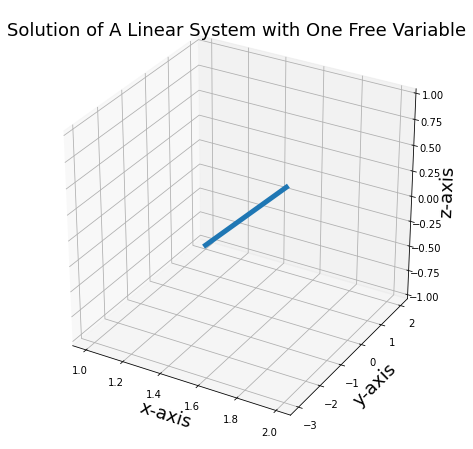

DO MY OWN EXAMPLES, AND USE EXAMPLES FROM WIKI EASIER
ADD THE LINEAR COMB PYTHON CODE BACK TO HERE INSTEAD OF DOT PROD
The below work are from https://github.com/MacroAnalyst/Linear_Algebra_With_Python.
Algebraic Definition (Linear Combination)
Definition extracted from Wikipedia1.
Let \(V\) be a vector space over the field \(\F\). As usual, we call elements of \(V\) vectors and call elements of \(\F\) scalars. If \(\v_1, ... , \v_n\) are vectors and \(a_1, ..., a_n\) are scalars, then the linear combination of those vectors with those scalars as coefficients is
Note that by definition, a linear combination involves only finitely many vectors (except as described in Generalizations below). However, the set S that the vectors are taken from (if one is mentioned) can still be infinite; each individual linear combination will only involve finitely many vectors. Also, there is no reason that n cannot be zero; in that case, we declare by convention that the result of the linear combination is the zero vector in \(V\).
import matplotlib.pyplot as plt
import numpy as np
from mpl_toolkits.mplot3d import Axes3D
import sympy as sy
sy.init_printing()
Visualization of Linear Combination in \(\mathbb{R}^2\)
Consider two vectors \(u\) and \(v\) in \(\mathbb{R}^2\), they are independent of each other, i.e. not pointing to the same or opposite direction. Therefore any vector in the \(\mathbb{R}^2\) can be represented by a linear combination of \(u\) and \(v\).
For instance, this is a linear combination and essentially a linear system.
Solve the system in SymPy:
A = sy.Matrix([[4, -2, 2], [2,2,10]])
A.rref()
\(\displaystyle \left( \left[\begin{matrix}1 & 0 & 2\\0 & 1 & 3\end{matrix}\right], \ \left( 0, \ 1\right)\right)\)
The solution is \((c_1, c_2)^T = (2, 3)^T\), which means the addition of \(2\) times of \(\left[ \begin{matrix} 4\\ 2 \end{matrix} \right]\) and \(3\) times of \(\left[ \begin{matrix} -2\\ 2 \end{matrix} \right]\) equals \(\left[ \begin{matrix} 2\\ 10 \end{matrix} \right]\).
Besides plotting the vector addition, we would like to plot the coordinates of basis that spanned by \(u\) and \(v\). We will explain further in later chapter.
Calculate the slope of vectors, i.e. \(\frac{y}{x}\) $$ s_1 =\frac{y}{x} = \frac{2}{4}=.5\ s_2 =\frac{y}{x}= \frac{2}{-2}=.-1 $$
The basis can be constructed as: $$ y_1 = a+.5x\ y_2 = b-x $$ where \(a\) and \(b\) will be set as constants with regular intervals, such as \((2.5, 5, 7.5, 10)\).
The coordinates of basis are pink web-style grids, each line segment is a unit (like \(1\) in Cartesian coordinate system) in the 'new' coordinates.
fig, ax = plt.subplots(figsize=(8, 8))
vec = np.array([[[0,0,4,2]],
[[0,0,-2,2]],
[[0,0,2,10]],
[[0,0,8,4]],
[[0,0,-6,6]]])
colors = ['b','b','r','b','b']
for i in range(vec.shape[0]):
X,Y,U,V = zip(*vec[i,:,:])
ax.quiver(X, Y, U, V, angles='xy', scale_units='xy', color = colors[i], scale=1, alpha = .6)
ax.text(x = vec[i,0,2], y = vec[i,0,3], s = '(%.0d, %.0d)' %(vec[i,0,2],vec[i,0,3]), fontsize = 16)
points12 = np.array([[8,4],[2,10]])
ax.plot(points12[:,0], points12[:,1], c = 'b', lw = 3.5,alpha =0.5, ls = '--')
points34 = np.array([[-6, 6],[2,10]])
ax.plot(points34[:,0], points34[:,1], c = 'b', lw = 3.5,alpha =0.5, ls = '--')
ax.set_xlim([-10, 10])
ax.set_ylim([0, 10.5])
ax.set_xlabel('x-axis', fontsize =16)
ax.set_ylabel('y-axis', fontsize =16)
ax.grid()
######################################Basis########################################
a = np.arange(-11, 20, 1)
x = np.arange(-11, 20, 1)
for i in a:
y1 = i + .5*x
ax.plot(x, y1, ls = '--', color = 'pink', lw = 2)
y2 = i - x
ax.plot(x, y2, ls = '--', color = 'pink', lw = 2)
ax.set_title('Linear Combination of Two Vectors in $\mathbf{R}^2$', size = 22, x =0.5, y = 1.01)
plt.show()
Linear Combination Visualization in 3D
We can also show that any vectors in \(\mathbb{R}^3\) can be a linear combination of a standard basis in Cartesian coordinate system.
Here is the function for plotting 3D linear combination from standard basis, we just feed the scalar multiplier.
def linearCombo(a, b, c):
'''This function is for visualizing linear combination of standard basis in 3D.
Function syntax: linearCombo(a, b, c), where a, b, c are the scalar multiplier,
also the elements of the vector.
'''
fig = plt.figure(figsize=(10,10))
ax = fig.add_subplot(111, projection='3d')
######################## Standard basis and Scalar Multiplid Vectors#########################
vec = np.array([[[0, 0, 0, 1, 0, 0]], # e1
[[0, 0, 0, 0, 1, 0]], # e2
[[0, 0, 0, 0, 0, 1]], # e3
[[0, 0, 0, a, 0, 0]], # a* e1
[[0, 0, 0, 0, b, 0]], # b* e2
[[0, 0, 0, 0, 0, c]], # c* e3
[[0, 0, 0, a, b, c]]]) # ae1 + be2 + ce3
colors = ['b','b','b','r','r','r','g']
for i in range(vec.shape[0]):
X, Y, Z, U, V, W = zip(*vec[i,:,:])
ax.quiver(X, Y, Z, U, V, W, length=1, normalize=False,
color = colors[i] ,arrow_length_ratio = .08, pivot = 'tail',
linestyles = 'solid',linewidths = 3, alpha =.6)
#################################Plot Rectangle Boxes##############################
dlines = np.array([[[a, 0, 0],[a, b, 0]],
[[0, b, 0],[a, b, 0]],
[[0, 0, c],[a, b, c]],
[[0, 0, c],[a, 0, c]],
[[a, 0, c],[a, b, c]],
[[0, 0, c],[0, b, c]],
[[0, b, c],[a, b, c]],
[[a, 0, 0],[a, 0, c]],
[[0, b, 0],[0, b, c]],
[[a, b, 0],[a, b, c]]])
colors = ['k','k','g','k','k','k','k','k','k']
for i in range(dlines.shape[0]):
ax.plot(dlines[i,:,0], dlines[i,:,1], dlines[i,:,2], lw =3, ls = '--', color = 'black', alpha=0.5)
#################################Annotation########################################
ax.text(x = a, y = b, z = c, s= ' $(%0.d, %0.d, %.0d)$'% (a, b, c), size = 18)
ax.text(x = a, y = 0, z = 0, s= ' $%0.d e_1 = (%0.d, 0, 0)$'% (a, a), size = 15)
ax.text(x = 0, y = b, z = 0, s= ' $%0.d e_2 = (0, %0.d, 0)$'% (b, b), size = 15)
ax.text(x = 0, y = 0, z = c, s= ' $%0.d e_3 = (0, 0, %0.d)$' %(c, c), size = 15)
#################################Axis Setting######################################
ax.grid()
ax.set_xlim([0, a+1])
ax.set_ylim([0, b+1])
ax.set_zlim([0, c+1])
ax.set_xlabel('x-axis', size = 18)
ax.set_ylabel('y-axis', size = 18)
ax.set_zlabel('z-axis', size = 18)
ax.set_title('Vector $(%0.d, %0.d, %.0d)$ Visualization' %(a, b, c), size = 20)
ax.view_init(elev=20., azim=15)
if __name__ == '__main__':
a = 7
b = 4
c = 9
linearCombo(a, b, c)
linearCombo(3, 5, 6) # Try again
Linear Combination of Inconsistent System
Inconsistent system means no unique solution exists. It might sound weird to treat a solution of an inconsistent system as a linear combination, but it is essential a trace of line.
One Free Variable Case
We have seen how inconsistent systems can be solved in the earlier lectures. Now we will investigate what solution means from the perspective of linear combination.
Consider a system
Solve in SymPy:
A = sy.Matrix([[1,1,2,1],[-2,0,1,-3],[1,1,2,1]])
A.rref()
\(\displaystyle \left( \left[\begin{matrix}1 & 0 & - \frac{1}{2} & \frac{3}{2}\\0 & 1 & \frac{5}{2} & - \frac{1}{2}\\0 & 0 & 0 & 0\end{matrix}\right], \ \left( 0, \ 1\right)\right)\)
The solution is not unique due to a free variable:
Let \(c_3 = t\), the system can be parameterized:
The solution is a line of infinite length, to visualize it, we set the range of \(t\in (-1, 1)\), the solution looks like:
fig = plt.figure(figsize = (8,8))
ax = fig.add_subplot(projection='3d')
t = np.linspace(-1, 1, 10)
c1 = 3/2+t/2
c2 = -1/2-5/2*t
ax.plot(c1, c2, t, lw = 5)
ax.set_xlabel('x-axis', size = 18)
ax.set_ylabel('y-axis', size = 18)
ax.set_zlabel('z-axis', size = 18)
ax.set_title('Solution of A Linear System with One Free Variable', size = 18)
plt.show()

Two Free Variables Case
Now consider the linear system: $$ \left[ \begin{matrix} 1 & -3 & -2\ 0 &0 & 0 \ 0& 0 & 0 \end{matrix} \right] \left[ \begin{matrix} x_1\ x_2\ x_3 \end{matrix} \right] = \left[ \begin{matrix} 0\0\0 \end{matrix} \right] $$ The augmented matrix is $$ \left[ \begin{matrix} 1 & -3 & -2 & 0\ 0 &0 & 0 & 0\ 0& 0 & 0 & 0 \end{matrix} \right] $$
We have two free variables $$ \begin{align} x_1 &= 3x_2+2x_3\ x_2 &= free\ x_3 &= free \end{align} $$ Rewrite the solution
The solution is a plain spanned by two vectors \((3, 1, 0)^T\) and \((2, 0, 1)^T\). Let's draw the plane and spanning vectors.
We also plot another vector \(v = (2,2,1)\) which is not a linear combination of \((3, 1, 0)^T\) and \((2, 0, 1)^T\). As you pan around the view angle (in JupyterLab use %matplotlib widge), it is apparent that \(v\) is not in the same plane of basis vectors.
fig = plt.figure(figsize = (8,8))
ax = fig.add_subplot(projection='3d')
x2 = np.linspace(-2, 2, 10)
x3 = np.linspace(-2, 2, 10)
X2, X3 = np.meshgrid(x2, x3)
X1 = 3*X2 + 2*X3
ax.plot_wireframe(X1, X2, X3, linewidth = 1.5, color = 'k', alpha = .6)
vec = np.array([[[0, 0, 0, 3, 1, 0]],
[[0, 0, 0, 2, 0, 1]],
[[0, 0, 0, 5, 1, 1]],
[[0, 0, 0, 2, 2, 1]]])
colors = ['r', 'b', 'g', 'purple']
for i in range(vec.shape[0]):
X, Y, Z, U, V, W = zip(*vec[i,:,:])
ax.quiver(X, Y, Z, U, V, W, length=1, normalize=False, color = colors[i],
arrow_length_ratio = .08, pivot = 'tail',
linestyles = 'solid',linewidths = 3, alpha = .6)
################################Dashed Line################################
point12 = np.array([[2, 0, 1],[5, 1, 1]])
ax.plot(point12[:,0], point12[:,1], point12[:,2], lw =3, ls = '--', color = 'black', alpha=0.5)
point34 = np.array([[3, 1, 0], [5, 1, 1]])
ax.plot(point34[:,0], point34[:,1], point34[:,2], lw =3, ls = '--', color = 'black', alpha=0.5)
#################################Texts#######################################
ax.text(x = 3, y = 1, z = 0, s='$(3, 1, 0)$', color = 'red', size = 16)
ax.text(x = 2, y = 0, z = 1, s='$(2, 0, 1)$', color = 'blue', size = 16)
ax.text(x = 5, y = 1, z = 1, s='$(5, 1, 1)$', color = 'green', size = 16)
ax.text(x = 2, y = 2, z = 1, s='$v$', color = 'purple', size = 16)
ax.set_xlabel('x-axis', size = 18)
ax.set_ylabel('y-axis', size = 18)
ax.set_zlabel('z-axis', size = 18)
ax.view_init(elev=-29, azim=130)
Linear Combination of Polynomial
In a more general sense, a function or a polynomial can also be a linear combination of other functions or polynomials.
Now consider a polynomial \(p(x)=4 x^{3}+5 x^{2}-2 x+7\), determine if it is a linear combination of three polynomials below:
which means that we need to figure out if the equation below holds
Rearrange and collect terms $$ \left(c_{1}+2 c_{2}+c_{3}\right) x^{3}+\left(2 c_{1}+c_{2}-c_{3}\right) x^{2}+\left(-c_{1}-c_{2}-c_{3}\right) x+\left(c_{1}+c_{2}-4 c_{3}\right)=4 x^{3}+5 x^{2}-2 x+7 $$
Equate the coefficients and extract the augmented matrix $$ \begin{aligned} &c_{1}+2 c_{2}+c_{3}=4\ &2 c_{1}+c_{2}-c_{3}=5\ &-c_{1}-c_{2}-c_{3}=-2\ &c_{1}+c_{2}-4 c_{3}=7\ &\left[\begin{array}{cccc} 1 & 2 & 1 & 3 \ 2 & 1 & -1 & 5 \ -1 & -1 & -1 & -2 \ 1 & 1 & -4 & 7 \end{array}\right] \end{aligned} $$
Before solving, we notice that the system has 4 equations, but 3 unknowns, this case is called over-determined.
A = sy.Matrix([[1,2,1,4],[2,1,-1,5],[-1,-1,-1,-2],[1,1,-4,7]])
A.rref()
\(\displaystyle \left( \left[\begin{matrix}1 & 0 & 0 & 1\\0 & 1 & 0 & 2\\0 & 0 & 1 & -1\\0 & 0 & 0 & 0\end{matrix}\right], \ \left( 0, \ 1, \ 2\right)\right)\)
We get the answer \((c_1, c_2, c_3)^T = (1, 2, -1)^T\), plug in back to equation $$ \left(x^{3}+2 x^{2}-x+1\right)+2\left(2 x^{3}+x^{2}-x+1\right)-\left(x^{3}-x^{2}-x-4\right)=4 x^{3}+5 x^{2}-2 x+7 $$ Indeed we have just established a linear combination between these polynomials.
-
https://en.wikipedia.org/wiki/Linear_combination#:~:text=In%20mathematics%2C%20a%20linear%20combination,a%20and%20b%20are%20constants). ↩